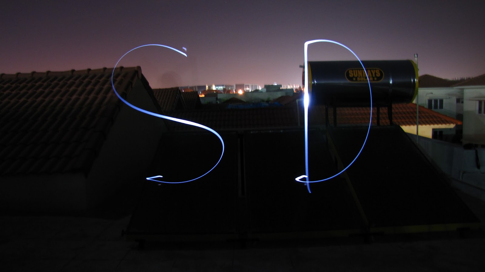
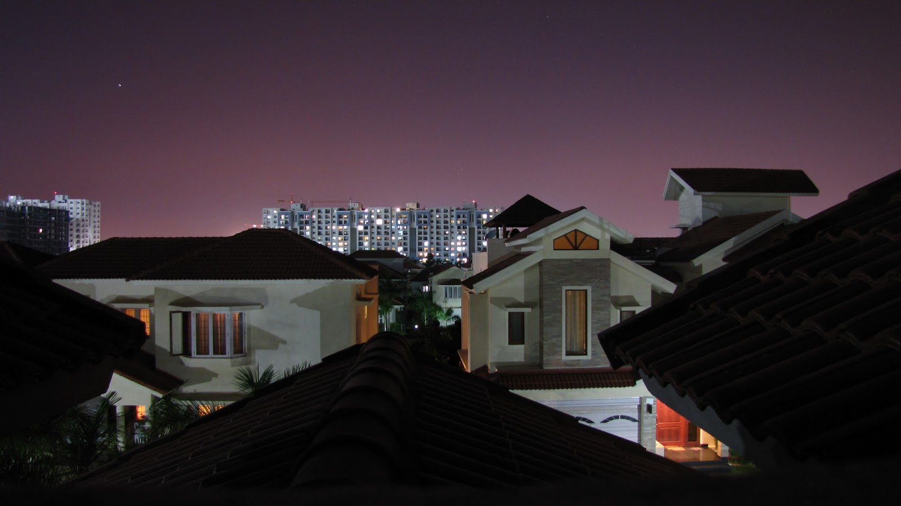
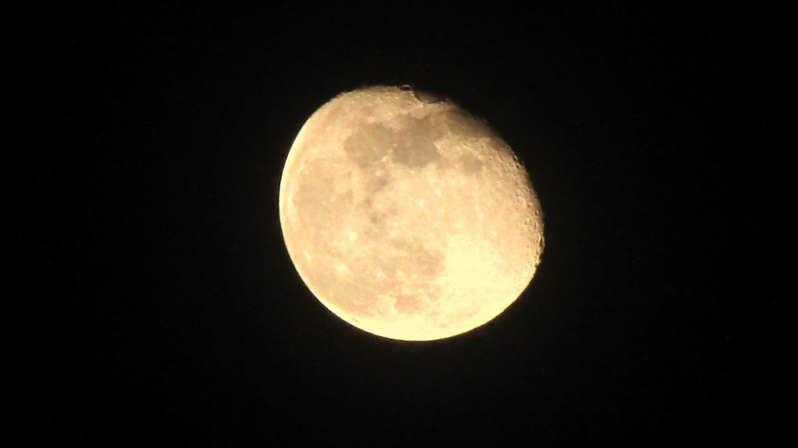
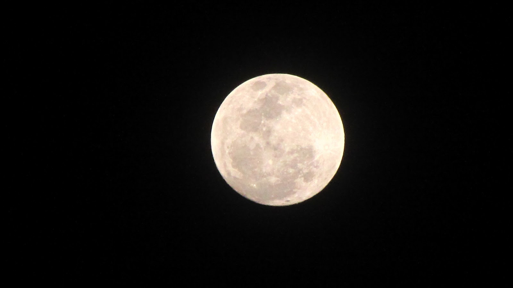
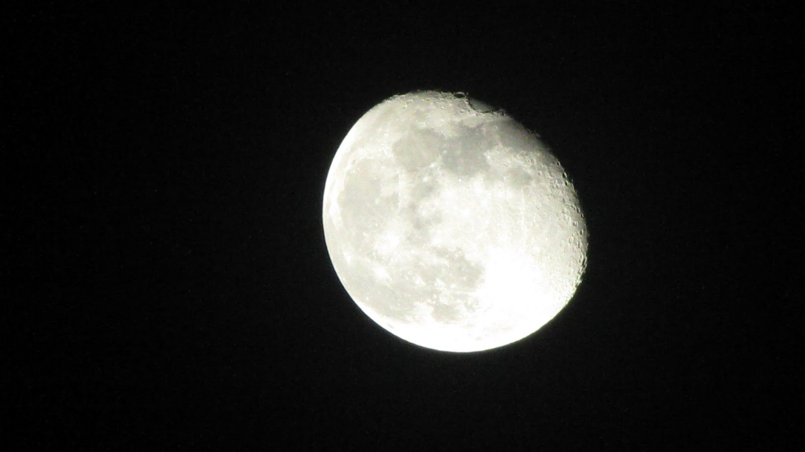
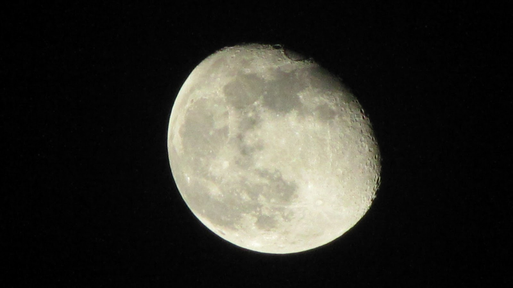

Hey guys! I haven't been able to get too many scenic shots of late, so I've invested some of my photography time in taking photos at night. Here are some of the shots that I've recently taken with my camera.

I really like employing this technique. You need to get someone to hold a torch while the camera is mounted on a tripod. The shutter was open for 15 seconds, ample time to draw the chosen letters. It works great for pseudo stop motion too!

Wow, I honestly admit that I didn't expect a shot like this! It was a simple matter to shoot it by mounting the camera and leaving the shutter open for a few seconds. The depth of field is stellar and I think the purple backdrop gives a nice setting to the scene. My only gripe with this photo is that there are too many buildings in between and that it would've looked much better if I had shot it from around 50m above ground level.
The other pictures you see are of the moon (if you haven't realized already :) ) These photos were taken over different days in the span of a few months and hence, the lighting changes considerably. My camera isn't a champion performer under low light conditions and the digital noise at high ISOs is evident. But I'll leave that to you to judge. I tried my best in obtaining relatively clear images (which is a pretty difficult feat when the camera's digital focal length is 2240 mm!)




I hope you enjoyed this edition. Please feel free to drop comments!